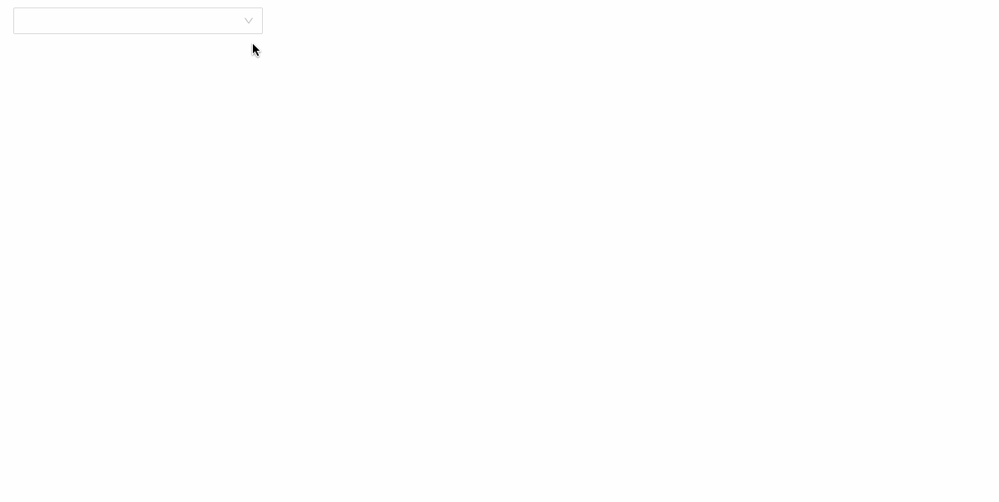
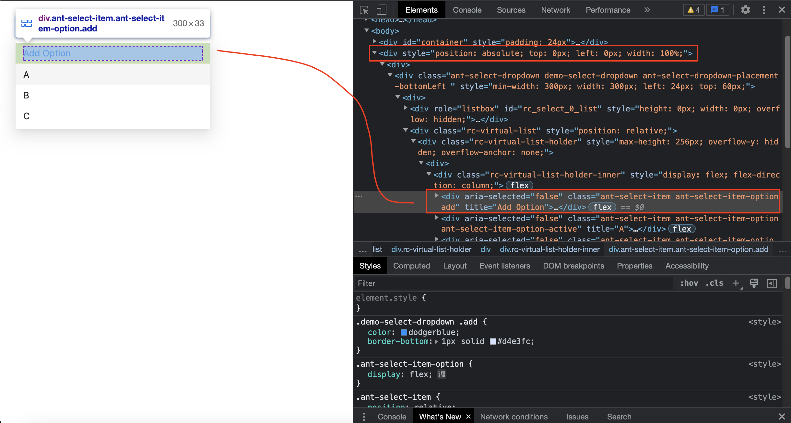

Antd 的彈性真的蠻大的。
簡述
直接來看想做出的效果：

我希望在選項中新增一個「Add Option」的選項，並且對這個選項做一些 CSS 設定。第一個會碰到的問題是：
我該怎麼用 selector 指到選項啊？
我們可以先來觀察 DOM 結構，首先能看到 Popup 的下拉選單預設會渲染在 </body> 之前：

知道結構後我們就能大概知道該把 className 加在哪裡了：
- popup 的容器元素
- 「Add Option」的選項
第一個地方可以用 dropdownClassName 這個 props 來設定：
1 | <Select |
注意不要跟 className 搞混了，這個會設定到的位置是 select box 本身（那個框框），不是 popup 的 dropdown。
第二個地方則是能在 options 中多傳一個 className 的屬性：
1 | const [list, setList] = useState([ |
最後就可以在 CSS 中做設定囉：
1 | /* 選取框框的樣式 */ |
這邊的完整範例可以到這邊參考。